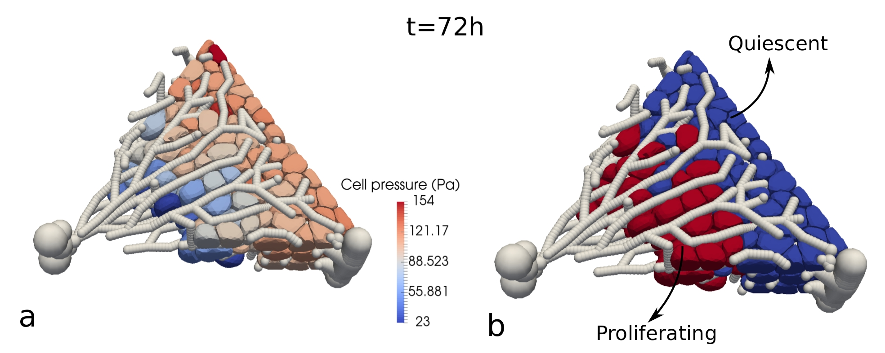

Modeling and simulation of tissue regeneration using high resolution cell models.
The goal is to get insight in the mechanical stress levels experienced by the hepatocytes during liver tissue regeneration, and clarify the relation with tissue architecture. I am elaborating on a previously introduced high resolution Deformable Cell Model in 3D (see Fig. 3) that is capable of accurately representing cell shape and integrating information at subcellular scales [2]. In a basic DCM the cell surface is discretized by a number of nodes which are connected by viscoelastic elements interacting via pairwise potential functions, creating a flexible scaffolding structure with arbitrary degrees of freedom per cell. I have extended the model with the capability for the cells to grow and divide. This model includes realistic internal mechanics, contact/adhesion mechanics, growth and division, and should become a new standard in agent-based tissue simulations.

Fig.1: High resolution cell model used in a simulation of hepatocyte regeneration in a liver lobule. The cells grow through the network of blood vessels (depicted in gray) from the portal vein area towards the central vein
Modeling of stress inhibited cell growth
This phenomenon is reminiscent to tumor cells experiencing the influence of the surrounding stroma. Using agent-based models, I studied growth dynamics of tumor cells (proliferation, growth, necrosis) under different mechanical pressure conditions. One sperhoid is growing in an elastic capsule, the other one in a Dextran solution (see Fig. 2). The model consists of a hybrid approach between cells represented by homogeneous adhesive and compressible spheres and a Deformable Cell Model (DCM). To simulate hypotheses concerning cell growth under pressure conditions, the model quantitatively takes into account the applied mechanical stress, cell density, and growth rate. In this work, it was demonstrated that the cellular growth response on external mechanical stress may be surprisingly quantitatively predictable, independently of the environmental conditions (work under review).
Fig.2: Two different experiments to investigate growing spheroids under pressure.
Modeling of cell-ECM interactions
The influence of mechanical feedback loop between cells and Extra-Cellular Matrix (ECM) is poorly understood. In collaboration with Dr. Margriet Palm (U. of Leiden) and Tommy Heck (KULeuven) we are creating models for cells and explicit representation of ECM. The cells have anchoring points (filopodia) that are connected to the ECM. The ECM is either modeled by a continuum material or a discrete network of viscoelastic elements. By a sequence of pulling and retracting the anchors, the cells move through the ECM. As such we can quantify both the stresses that work on the cells and the ECM. Part of this work is published in [3].
Past (before 2013)
Development of high resolution ”Deformable Cell Model“: modeling of arbitrary shaped cells with high
detail
The majority of agent based models in the past were build on the
assumption of a rigid shaped cells (so-called center based models:
e.g. spheres, ellipsoids). In a some problems, such simplifications
suffice to accurately simulate the biological or clinical problem (e.g.
tumor growth [6]). Yet, as more and more detail about cell shape and bio-mechanical forces is getting required nowadays, the development of more complex models has become timely.
Fig.3: Two different experiments to investigate growing spheroids under pressure.
In collaboration with my former collegues in KULeuven, and based on the 3D cell model developed during my KULeuven post-doc work, we further elaborated on a so-called Deformable Cell Model (DCM) .
Many aspects of the subcellular structure, such a membranes, cytoskeleton, nucleus and organelles can be
quantified within this framework [3]. This model type therefore allows simulations where cells shape and
subcellular detail are important variables (but is more limited in cell numbers as compared to center based models). In this particular research, we studied the adhesion dynamics of cells to a surface. The developed contact adhesion model is a discretization of a well known continuum theory (Maugis-Dugdale). The model gives very good results with respect to experiments and lead to several new insights. The principals of this contact model can also be further exploited to study contact mechanics of irregularly shaped rigid bodies in DEM [8].
Modeling of red blood cells in Stokes flow
Smoothed Particle Hydrodynamics (SPH) is a Lagrangian meshfree particle based method to simulate Navier-Stokes dynamics involving free surfaces, large deformations and complex physics.
However, processes at cellular scale are usually viscosity dominated (overdamped) and hence a Stokes regime can be assumed.
I developed an SPH solver for fluid flows in Stokes regime. The method (called NSPH) is based on the standard SPH technique but reduces it to a first order system and involves a different numerical solving scheme [9]. Thanks to this, longer timescales can be simulated, typically needed in cellular processes. I applied this
method to the dynamics of a red blood cell passing a through a
narrow channel (capillary). The blood plasma was modeled by
NSPH, while the red blood cell was represented by a connection of
elastic elements (see Fig.4).
Fig.4: Simulation of Stokes dynamics using SPH: red blood cell passing through a narrow capillary.
Modeling of viscoelastic bio-fluids
During my last year as a researcher at KUL, I created a numerical model for simulations of viscoelastic bio-fluid flow. This project was a bilateral collaboration between KULeuven and the company MOBA N.V (The Netherlands) to understand and optimize the yield of albumen in industrial egg breaking machines. This is a very complicated process as the egg contents contain non-
Newtonian fluids, membranes and complex geometries. To get insight in the process of albumen outflow in eggs, I coded a Smoothed
Particle Hydrodynamics model for simulating viscoelastic fluids (Maxwell model) including surface tension. The model encompassed a 3D realistic egg shell geometry with inside a distinct egg yolk and albumen. However, the results of this project are confidential.
Modeling of impact of cellular tissues and multi-scale modeling of cellular mechanics in tissues.
During my late PhD and early post-doc years, I gained interest in simulation of living matter, i.e cells and
tissue [10]. I became involved in a multiscale project and collaboration between two KUL reseach groups.
The goal in this project was to understand how cellular tissue responds to dynamic mechanical load.
Hereby, the project aimed at providing insights on how two numerical methodologies in mechanical modeling of tissue, whereby one is interested in linking microscopic properties (cellular level) to macroscopic (tissue-level) behavior, can be
cast into an integrative approach. This work was a scientifically very successful collaboration between the Mebios lab (Faculty of Bio-engineering, KULeuven) and the department of applied mathematics (Faculty of Engineering, KULeuven). The tissue-level is assumed to behave viscoelastic and simulated using nonlinear Finite Element Methods, while the cellular scale is approached by particle based methods and incorporated the subcellular features such as cytoplasm viscosity, cell shape, etc.
Fig.5: Snapshot of simulated 2D cellular structures
and 3D cell during impact. Each cell is represented by a
number of particles describing liquid and solid phases.
The coupling between the two scales was achieved using computational homogenization techniques and Representative Volume Elements (RVEs). This
project was financed by the Research Fund of Flanders (FWO) and the KULeuven and run from the
year 2006 to 2010. My personal contribution to the results of this project is the development of the
micro-scale model and partially also to the multiscale coupling. The microscale model involves a physical representation of cells and their parts (membranes, cytoplasm, nucleus, ..). The cells interact with each other by adhesive forces. Small groups of cells form a aggregate that represents a
small but repetitive part of the tissue. The model is able to simulate large deformations and even breakage of cells under impact load (see Fig. 10) [11, 12, 13].
This project resulted in a working code that uses microscopic physical properties of cells (e.g. cytoplasm
viscosity, cell wall Young modulus, cellular structure) and predicts the overall constitutive behavior of
the resulting tissue within a feasible computation time [14, 15]. This work greatly contributed to my
understanding of multiscale methods. Several innovative contributions to the field in order to accomplish
the mission of this project had to be introduced:
+ Construction and implementation of a detail mechanical model of a biological cell with flexibility
towards physical features and high accuracy.
+ Introduction of viscous inter-particle forces posed challenging problems with regard to the standard
computational homogenization strategies. However, we successfully developed a technique to incor-
porate these effects in the boundary value problem for the Representative Volume Element.
PhD work: modeling of granular material flow using the Discrete Element Method
Discrete Element Method (DEM) simulations are now becoming standard tools to understand granular
matter flow dynamics, because of increasing interest (pharmacy, mining industry, ..) and improved com-
putational means. Performing DEM simulations requires a extensive knowledge on contact mechanics,
multi-body dynamics, as well as efficient contact detection algorithms, and advanced C++ coding.
Model (DEM).
During my PhD, I studied dynamics and contact
mechanics of rigid materials in bulk, in particu-
lar the collective motion of grains and the inter-
action with rigid machine parts. This involved
the development and application of a particle-
based code. The platform Mpacts (http://dem-
research-group.com) is now a mature C++/python
oriented modular code to simulate particle dynam-
ics. It is capable of simulating solid dynamics
(grains, powders, arbitry shaped objects,...) us-
ing the Discrete Element Method, as well as com-
plex fluid problems (Newtonian, non-Newtonian)
using Smoothed Particle Hydrodynamics. In the
early years of 2000, our the KULeuven research
group was one the first groups to apply this
method to industrial problems. Nowadays, the
software is used by several companies.
Fig.6: PhD work, involving development of a DEM framework to predict and optimize granular flow in agri-
cultural processes.
The goal of my PhD thesis was to build a numeri-
cal model to simulate and quantify granular flow
and the spread of grain particles in a spinning disc fertilizer spreader, and thus to increase the optimiza-
tion of the performance of agricultural machines (see Fig. 11. During the first years (2001-2005), I mainly
developed the model and code for interacting grains including spherical and non-spherical shapes, and the
interaction with rotating machine parts. In order to validate the models and calibrate model parameters,
I built several experiments setups [16, 17, 18, 19].
From the insight obtained with simulations, we developed a working code that predicts fertilizer particle
spreading on a field with a reasonable accuracy. The project was a successful collaboration with the
Institut national de recherche en sciences et technologies pour l’environnement et l’agriculture (IRSTEA,
Montoldre, France), the Institute for Agricultural and Fisheries Research in Belgium (ILVO), and several
industrial partners. In the period 2006-2007, I also advised the company BASF in developing a prototype
of a new fertilizer spreader machine (BASF, US patent 6588685). This was within the framework of a one
year bilateral project.